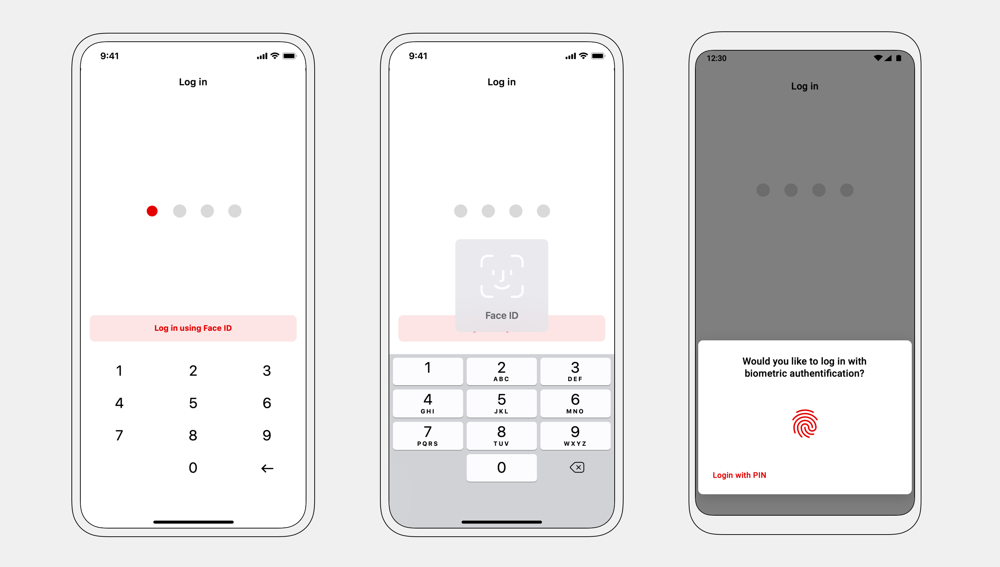

Aircash — iOS, Android UI Design, UX Design
Product design for a new type of financial institution on the market — a digital wallet requiring no bank account.
With over 100.000 users and €13mil/year in transactions, tight integration with Croatian service providers, and an EU e-money licence — Aircash is one of the biggest players on the Croatian fintech scene.
The challenge
Completely rework the app with a new visual language, tackle the (non)existing information architecture, identify user needs, and define and help fulfill business goals.
My process
Working through analytics data with stakeholders I identified the user goals and business objectives. I then prepared and executed redesign and feature roadmaps in collaboration with product, development, and CEO.
Solutions
First, I tackled the lack of visual consistency and information architecture. After that, I worked on existing and new features impacting revenue, user base growth, and user retention.
As a result, the user base grew by +1000%, with weekly user events growing by +360%.
Information Architecture
The idea was to make the most used features accessible while having in mind the business goals. Analytics and business objectives defined, complemented with interviews and real-life observation, defined user goals. I designed detailed user flows for every section.

Onboarding user flow
Send, top-up, and withdraw were extracted to the home screen. Now, all money operations are accessible immediately after opening the app.
To increase revenue, marketplace was shown on the home screen, incentivizing use.

Adding biometric login removed pain points in the initial phase of each user journey.
Side-menu type navigation was kept in the redesign to reduce development costs, but the "open" button was moved to the bottom, improving usability.
A unique Aircash-code was added to the homescreen — incentivizing user-to-user transactions and increasing revenue. App and user settings were moved to the profile section, accessible from the homescreen.

New services
To attract new and keep existing users, I expanded on the "digital wallet" idea. Features such as utility bills payment, parking payment, and loyalty card scanning consolidated the financial needs of our users at a single point.
With Aircash Pay users can quickly pay invoices, utility bills or send money to other Aircash users — by scanning a QR code.

Adding Parking payment simplified our users' lives — instead of using city-specific apps or paying with cash, they can pay with their Aircash wallet.
Various versions showing the progress of the feature — design was reworked after early testing.
Increasing userbase through referalls
Users can invite their friends with one tap — sending an SMS with the link. The referral rate was over 7%.
The main challenges were showing the statuses of invited contacts and explaining the referral process to the user. Three invited users have to top-up their accounts to complete the referral.
Transactions
Users can instantly send money anywhere in the world, together with a nice message.
Users can top-up with either a card or with cash — for free — at more than 1000 locations in Croatia. This is a feature most competitors don't have — they limit their users with top-up fees or a small location number.
Through partnership with an Intesa Sanpaolo group bank, PBZ, Aircash users can use ATMs for money withdrawal — without a bank account. Withdrawal is done by entering a code generated in the app — faster than using a regular card.
Money can also be withdrawn at the aforementioned thousands of locations. A barcode is generated and shown to the employee.
Welcoming new users
Even without an account, new users can open and explore the app, incentivizing account creation.
Revised onboarding simplified and sped up the process of opening an account. A clear progress indicator is shown throughout the whole process.
Visual language was unified accross both platfrom, while adhering to platform specific design guidelines.
Simple and playful were the directions for iconography — diverging from main competitors, banking applications.
Default platform fonts were used together with a simple color palette in an effort to keep the interface simple and usable.